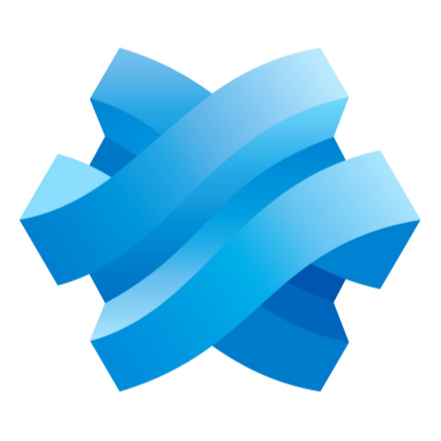
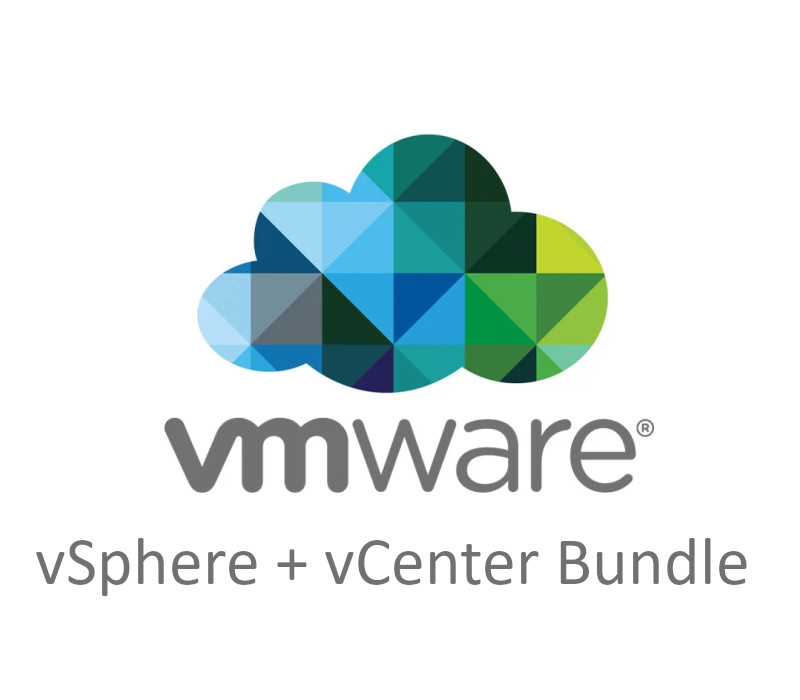

📋 Tableau de synthèse E5 — BTS SIO SISR 2026
Récapitulatif complet de toutes mes réalisations professionnelles

01
Infrastructure
Déploiement PXE & Clonezilla
Mise en place d’un processus de déploiement des postes via PXE afin d’optimiser la masterisation avec Clonezilla.
Compétences mobilisées :
Gérer le patrimoine informatique, Répondre aux incidents et demandes, Travailler en mode projet, Mettre à disposition un service, Développer la présence en ligne.
Gérer le patrimoine informatique, Répondre aux incidents et demandes, Travailler en mode projet, Mettre à disposition un service, Développer la présence en ligne.
PXE
Clonezilla
TFTP / DHCP
Masterisation
Détails techniques →

02
Cybersécurité
Mise en place ADCS
Déploiement d'une infrastructure PKI pour la gestion des certificats numériques au sein du domaine.
Compétences mobilisées :
Gérer le patrimoine informatique, Mettre à disposition des utilisateurs un service informatique
Gérer le patrimoine informatique, Mettre à disposition des utilisateurs un service informatique
ADCS
PKI
Windows Server
Cybersécurité
Détails techniques →

03
Virtualisation
Infrastructure vCenter
Mise en place d'une infrastructure de virtualisation pour les environnements de test hospitaliers.
Compétences mobilisées :
Gérer le patrimoine informatique, Répondre aux incidents et aux demandes d’assistance et d’évolution, Travailler en mode projet, Mettre à disposition des utilisateurs un service informatique
Gérer le patrimoine informatique, Répondre aux incidents et aux demandes d’assistance et d’évolution, Travailler en mode projet, Mettre à disposition des utilisateurs un service informatique
VMware ESXi
vCenter (VCSA)
vSphere
Virtualisation
Détails techniques →